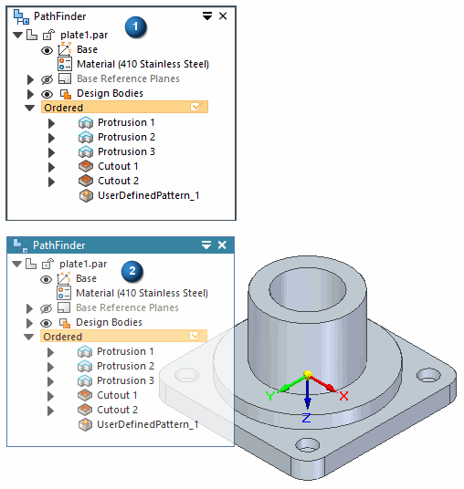
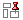
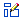
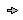
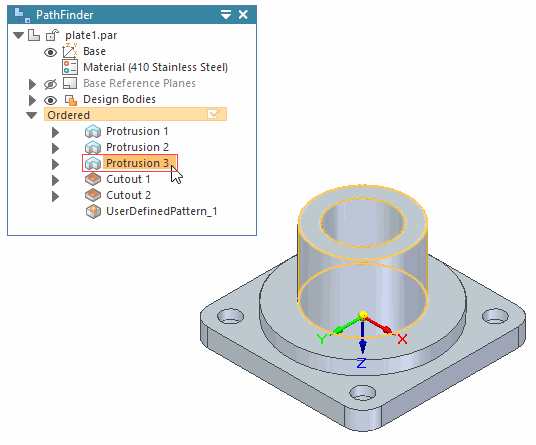
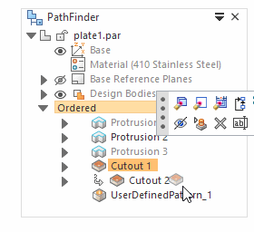
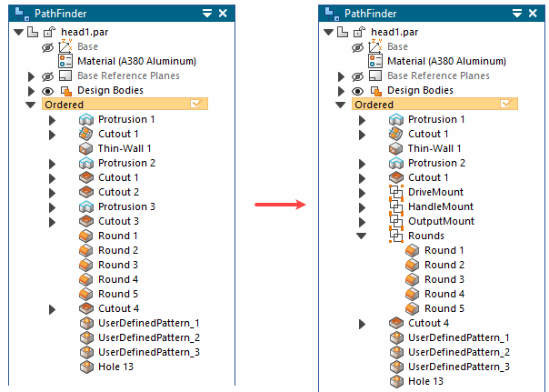
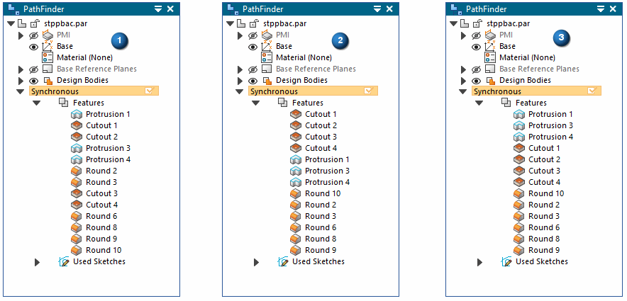

Using PathFinder in a part model
When working in a part model, you can use PathFinder to help you work with synchronous and ordered features that make up Solid Edge parts. PathFinder is a collection of the features, sketches, reference planes, dimensions, and coordinate systems that comprise the model. There is a synchronous portion and an ordered portion of the PathFinder tree.
PathFinder can be used in a vertical docking window form (1) or in a form that floats in the document window (2). The Helpers page in Solid Edge options controls the PathFinder form.

PathFinder provides alternate ways to view the features, besides looking at the part in a graphics window, and allows you to change the way the part is constructed. The feature viewing capabilities are especially helpful when you are working with a model that someone else constructed—you can see exactly what they did, and locate the feature responsible for any aspect of the part that you want to change.
PathFinder sketch symbols
Symbols in the left column of PathFinder give you information about the status of sketches. The following table explains the sketch symbols used in PathFinder:
|
Legend |
|
|---|---|
 |
Noncombinable sketch |
 |
Combinable sketch |
 |
Active sketch (combinable active sketch shown) |
 |
Sketch with a problem (select the sketch in PathFinder and see the PromptBar for details) |
|
Sketch contains under-constrained profiles. You can turn this off in Solid Edge Options→General "Indicate under-constrained profiles in PathFinder". |
PathFinder part symbols
Symbols in the left column of PathFinder give you information about the status of part features. The following table explains the part symbols used in PathFinder:
|
Legend |
|
|---|---|
|
Suppressed part feature |
|
|
Feature with a problem (select the feature in PathFinder and see the PromptBar for details) |
|
|
Unsuccessful feature operation |
|
|
Feature has been rolled back (right-click feature and click Go to, to roll feature forward) |
|
|
Floating feature origin occurs when the face the feature was originally placed on no longer exists. To fix this, right-click the feature origin, and then click Reposition Feature to define a new face for the feature. |
Using PathFinder
You can use PathFinder for the following operations when working with a part model:
-
Selecting features, reference planes, sketches, construction surfaces, coordinate systems, PMI dimensions.
-
Reordering features, reference planes, sketches, and construction surfaces.
-
Displaying and hiding reference planes, sketches, construction surfaces, coordinate systems, detached features and so forth within the graphics window.
Selecting features
When you position the cursor over an item in the list, the corresponding feature highlights. To select a feature, click the left mouse button.

You can select multiple features in PathFinder by holding the Ctrl key while selecting the features individually. You can use the Shift key to select all the features between the first and the last features selected. To deselect a feature from a list of multiple features, hold down the Ctrl key and select the feature to drop from the select set.
Reordering features
PathFinder allows you to drag a selected feature to a different position in the list. As you drag, PathFinder displays an arrow to show where you can move the feature.

If the change invalidates other features, they are placed on the Error Assistant dialog box. You can use the Errors command on the Tools tab to display the Error Assistant dialog box to find and fix the problems.
Deleting features
To delete a feature in PathFinder, first select the feature, and then press the Delete key. You can delete multiple features by selecting them with the Shift key.
You can also delete a feature by right-clicking the feature and choosing Delete on the shortcut menu.
Renaming features
By default, Solid Edge provides names for every feature you create. To rename a feature later, right-click the feature whose name you want to change and click Rename on the shortcut menu. Type the new name in PathFinder.
Detaching features
You can detach synchronous features that are part of the solid model using the Detach command on the shortcut menu when a feature is selected in PathFinder or the graphics window. When you detach a feature, it is removed from the solid model, changed to a construction surface, and hidden in the graphics window. You can use PathFinder to redisplay the construction surface.
To learn more, see Detaching and attaching faces and features.
Grouping entries within PathFinder
You can define a named group for a set of entries within PathFinder. For example, you can define groups for the sets of features that define the main body, mounting locations, and rounds on a part.

Creating a group for a set of PathFinder entries helps to consolidate long feature trees and can make it easier to locate, select, and manipulate a set of PathFinder entries as a unit.
In the synchronous environment, the entries you want to group do not need to be contiguous, but they must all be in the same collection type. For example, you cannot define a group that contains entries from the Features collection and Dimensions collection.
You define a group using the Group command on the shortcut menu when a contiguous set of entries is selected. You can use the Rename command on the shortcut menu to rename a group entry.
You can also ungroup a previously defined group using the Ungroup command on the shortcut menu.
Creating user defined sets within PathFinder
You can define a named set for a related group of entries within PathFinder. For example, you can define sets of features that define the main body, mounting locations, and rounds on a part.
To learn more, see Working with user defined sets.
Sorting a Synchronous Collection in PathFinder
You can use the Sort commands on the shortcut menu when the cursor is positioned over a Collection title to sort the collection by name or by type. For example, you may want to sort the entries in the Features collection by feature type to make it easier to find a particular cutout you constructed. Because a synchronous model has no strict history tree order that must be maintained, it makes no difference in what order the entries in a collection are listed.
(1) unsorted PathFinder view, (2) sort by name PathFinder view, (3) sort by type PathFinder view

How do I
Display reference elements for a partDisplay Folders within PathFinder
Select a feature with PathFinder
Reorder features
Recompute a feature
Insert a feature
Play back feature construction
Repair a profile with recompute problems
Suppress a feature
Unsuppress a feature
Suppress an assembly relationship
Unsuppress an assembly relationship
Show the parents and children for feature
Hide the unselected features in a Part document
Convert a profile to a sketch
Look up more details
PathFinder tabFeature Playback tab